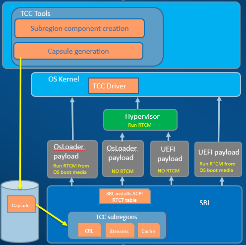
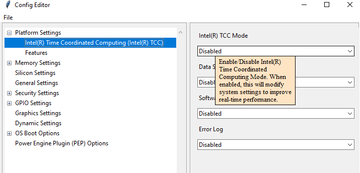

Intel® TCC enable
Intel® TCC feature includes Intel® TCC subregion support, Intel® TCC detail configuration, SBL boot option for real-time configuration manager (RTCM), etc. For each SBL platform, there is a build configuration file BoardConfig.py. User could check this build configuration file to make sure self.ENABLE_TCC is set to 1 to enable TCC subregion. The other Intel® TCC related configuration data might also be enabled when self.ENABLE_TCC is set. User could check the platform configuration BoardConfig.py for details.
This section will discuss Intel® TCC feature with SBL.
Intel® TCC overview
Intel® TCC (Time Coordinated Computing) is a set of capabilities that improve compute efficiency for real-time applications by solving jitter and latency issues inside the compute node. This creates fast connections that keep IP blocks within the system in sync. To learn more about Intel® TCC, see Intel® TCC Tools for details.
Here is the Intel® TCC work flow overview with SBL when Intel® TCC is supported on the platforms.
{kind=link}
SBL defined several subregions for TCC components inside SBL IFWI. Each subregion could be updated via SBL firmware update mechanism. During boot time, SBL would load these TCC components from these subregions and install TCC RTCT ACPI table.
SBL supports two popular payloads: UEFI payload and OsLoader payload. When booting with UEFI payload, UEFI payload would load RTCM from OS boot media and run RTCM before booting OS, or UEFI payload could boot a hypervisor which would have a built-in RTCM. When booting with OsLoader Payload, Osloader Payload would check the SBL boot option to decide to boot RTCM or not. If RTCM is configured in SBL boot option, SBL would load RTCM from OS boot media and run it before OS. If hypervisor with built-in RTCM would be boot from SBL, user should disable RTCM from SBL boot option configuration data.
From Intel® TCC Tools application, user could generate streams config component and cache config component. These components need be signed using the same key used in SBL build so that it could pass SBL verification in the boot time. Before putting the signed TCC component into SBL subregion, it should be encapsulated to a capsule image which is signed by a firmware update key. The firmware update key should match with SBL key so that the capsule image could pass SBL capsule verification during firmware update. The capsule location could be specified by SBL configuration data, SBL will update the TCC subregion using the specified capsule image in next boot once firmware update is triggered. Similarly, user could also update cache reservation library (CRL) binary using SBL firmware update flow.
Intel® TCC subregion
Subregion support in BIOS region is a generic SBL feature. Each subregion could define its own subregion size and authentication method for the component inside the subregion. SBL defined several subregion for Intel® TCC binaries.
Cache Configurator
SBL doesn’t have knowledge on the content of Cache subregion. It is loaded as a sub-region component and is sent directly to Intel® Firmware Support Package (Intel® FSP) to process it.
Streams Configurator
When Data Streams Optimizer (DSO) is enabled, SBL would uses the BIOS settings from this subregion to update SBL setting and FSP settings. For the other information from this subregion, the Intel® Firmware Support Package (Intel® FSP) is expected to process it.
Cache Reservation Library
The cache reservation library (CRL) is described as Time Optimized Partitioning and is delivered to SBL as a binary. SBL doesn’t have knowledge on the content of CRL. It is loaded as a sub-region component and report it in ACPI RTCT table.
- SBL defines these regions in SBL platform build config file BoardConfig.py. Take Tiger Lake as an example.
-
self.ENABLE_TCC = 1 if self.ENABLE_TCC: self.TCC_CCFG_SIZE = 0x00001000 self.TCC_CRL_SIZE = 0x00008000 self.TCC_STREAM_SIZE = 0x00005000 # Name | Image File | CompressAlg | AuthType | Key File |Region Align| Region Size | Svn Info # =============================================================================================================================================================== ('IPFW', 'SIIPFW.bin', '', container_list_auth_type, 'KEY_ID_CONTAINER'+'_'+self._RSA_SIGN_TYPE, 0, 0, 0), # Container Header ('TCCC', '', 'Lz4', container_list_auth_type, 'KEY_ID_CONTAINER_COMP'+'_'+self._RSA_SIGN_TYPE, 0, self.TCC_CCFG_SIZE, 0), # TCC Cache Config ('TCCM', '', 'Lz4', container_list_auth_type, 'KEY_ID_CONTAINER_COMP'+'_'+self._RSA_SIGN_TYPE, 0, self.TCC_CRL_SIZE, 0), # TCC Cache Reservation Library ('TCCT', '', 'Lz4', container_list_auth_type, 'KEY_ID_CONTAINER_COMP'+'_'+self._RSA_SIGN_TYPE, 0, self.TCC_STREAM_SIZE, 0), # TCC Stream Config
In the build configuration file, user could set self.ENABLE_TCC to 1 to enable Intel® TCC subregion and adjust TCC subregion size. All Intel® TCC subregion are in container name “IPFW” by default.
In each subregion, it has a unique region name identified by 4 characters. SBL would use it when loading component from subregion and update it via firmware update.
One of the options to put Intel® TCC binaries (Cache config, stream config and CRL) into these subregion as part of IFWI is to specify the Image file name in this build config file, and copy
the corresponding binaries into Platform<Platform>BoardPkgBinaries folder in SBL source code before building SBL. And user could also specify different compression and authentication method for
the component inside this subregion.
Intel® TCC detail settings
- SBL provides several configuration items for Intel® TCC settings.
-
- TccEnable : name : Intel(R) TCC Mode type : Combo option : 0:Disabled, 1:Enabled help : > Enable/Disable Intel(R) Time Coordinated Computing Mode. When enabled, this will modify system settings to improve real-time performance. length : 0x1 value : 0x0 - TccTuning : name : Data Streams Optimizer type : Combo option : 0:Disabled, 1:Enabled help : > Enable/Disable Data Streams Optimizer (DSO). Enable will utilize DSO Subregion to tune system. DSO settings supersede Intel(R) TCC Mode settings that overlap between the two. length : 0x1 value : 0x0 - TccSoftSram : name : Software SRAM type : Combo option : 0:Disabled, 1:Enabled help : > Enable/Disable Software SRAM. Enable will allocate 1 way of LLC; if Cache Configuration subregion is available, it will allocate based on the subregion. length : 0x1 value : 0x0 - TccErrorLog : name : Error Log type : Combo option : 0:Disabled, 1:Enabled help : > Enable or Disable Error Log. Enable will record errors related to Intel(R) TCC and save them to memory. length : 0x1 value : 0x0
User could directly change the default values in CfgData_Tcc.yaml, but the default values will be overridden if same fields exist in a board specific delta file. It is preferred to use SBL ConfigEditor.py tool to change SBL configuration data to update the board specific delta file before building SBL.
To use SBL configuration tool to change the delta file, run the ConfigEditor.py tool from SBL source code:
BootloaderCorePkg\Tools\ConfigEditor.py
Following these steps to change SBL configuration data.
1. open SBL default configuration data
Open default configuration file CfgDataDef.yaml from platform configuration data folder. Take Tiger Lake as example, open file Platform\TigerlakeBoardPkg\CfgData\CfgDataDef.yaml in this step.
2. load the delta file
Same SBL image could boot multiple boards based on board ID. Each board delta file would override the default SBL configuration data. So need load the board delta file if it is already exists as below.
The board delta file would be in same folder with CfgDataDef.yaml. Open CfgData_Int_Tglu_Ddr4.dlt as an example.
3. change option to enable tcc
Find Intel® TCC settings from ConfigEditor and update the options if required.
4. save the change to delta file
After changing option, save the changes back to the same delta file (CfgData_Int_Tglu_Ddr4.dlt in this example) to override the original one.
After saved the delta file, the following lines will be added to the new delta file:
TCC_CFG_DATA.TccEnable | 0x1
TCC_CFG_DATA.TccTuning | 0x1
TCC_CFG_DATA.TccSoftSram | 0x1
TCC_CFG_DATA.TccErrorLog | 0x1
5. build SBL
With above configuration data change, rebuild SBL then the TCC settings would be enabled in new SBL image.
Intel® TCC RTCM setting
As described in Intel® TCC overview, SBL supports OsLoader payload and UEFI payload. Both payload doesn’t need load and run real-time configuration manager (RTCM) when booting hypervisor image since hypervisor image is expected to have a built-in RTCM. When UEFI payload is used, there is no special module for RTCM load. User could manually load and run RTCM before normal OS, or using a startup script to load and run RTCM before normal OS, or using other methods. When OsLoader payload is used, SBL boot option need be configured correctly so that SBL OsLoader could load and run RTCM before a normal OS. After building an RTCM container, user could either directly update boot option configuration data file CfgData_BootOption.yaml, or using ConfigEditor.py tool to update it.
Below are the steps on how to update the SBL boot option to enable RTCM for OsLoader Payload using the ConfigEditor.py tool.
Container build command:
python BootloaderCorePkg\Tools\GenContainer.py create -cl RTCM:<path/to/rtcm> -t NORMAL -k <path/to/key>
Step 1: Select boot flag
Following step 1 ~ 2 in Intel® TCC detail settings to open default configuration data and delta file using ConfigEditor tool, then select Boot Option 0 as below.
There are six boot option entries listed in this example. Since SBL need load RTCM beside loading normal OS boot image in the same boot cycle, it would need two boot option entries (Let’s use the first two entries as an example).
The first boot option entry is used to configure the normal OS boot image and the “boot flags” in the first boot option entry need set to Extra image support to indicate there is an extra image to load/boot.
Step 2: Select image type
Select the second boot option entry used to configure extra boot image RTCM, and change the boot image type to Extra Image as below.
Step 3: Fill extra image name
After image type is changed, some fields might be hidden since they are not required. Update Normal OS info or LBA address to RTCM file name actual file name in boot media.
Often RTCM file exists in same partition with normal OS image. Here fill the file name “/boot/sbl_rtcm” as below.
Step 4: Save the change to delta file
Follow step 4 in Intel® TCC detail settings to save the changes, rebuild SBL then RTCM would be loaded and run from SBL OsLoader payload before booting OS.
Update component in Intel® TCC subregion
Some of the subregion could be updated using Intel® TCC Tools or through a manual capsule update flow. Details on the manual steps will be discussed in this section.
All of the Intel® TCC binaries can be updated individually or at the same time. Below example shows how to update one component from Yocto.
Step 1: Get the raw component binary
The binary could be generated by Intel® TCC Tools (e.g. Stream Config), or could be downloaded from a website (e.g. CRL). Let’s use CRL binary TccCrl.bin as an example.
Step 2:Sign the raw component binary
Generate a signed file from the raw binary (TccCrl.bin). Using SBL GenContainer.py tool to sign the raw component to get a signed file:
python BootloaderCorePkg\Tools\GenContainer.py sign -f TccCrl.bin -o SignedTccCrl.bin -a RSA3072_PSS_SHA2_384 -k ContainerCompTestKey_Priv_RSA3072.pem
The output file (SignedTccCrl.bin) generated from the above command is a signed binary that will be verified by SBL during boot, so make sure the signing key ContainerCompTestKey_Priv_RSA3072.pem is same from Sblkeys folder when SBL is built.
SBL support component compression during signing the raw component binary. SBL would automatically decompress the component during the component loading. Take LZ4 compression as example on yocto:
python BootloaderCorePkg\Tools\GenContainer.py sign -f TccCrl.bin -o SignedTccCrl.bin -a RSA3072_PSS_SHA2_384 -k ContainerCompTestKey_Priv_RSA3072.pem -c lz4 -td BaseTools/BinWrappers/PosixLike/Lz4Compress
NOTE: The compression tool Lz4Compress will be generated from SBL source code during SBL build at BaseTools/BinWrappers/PosixLike/Lz4Compress in Linux. For windows system, the compression tool will be generated at BaseToolsBinWin32Lz4Compress.exe. so the windows compress command is:
python BootloaderCorePkg\Tools\GenContainer.py sign -f TccCrl.bin -o SignedTccCrl.bin -a RSA3072_PSS_SHA2_384 -k ContainerCompTestKey_Priv_RSA3072.pem -c lz4 -td BaseTools\Bin\Win32
More compression info could be found from command “python BootloaderCorePkgToolsGenContainer.py -h”.
Step 3: Generate capsule image
Create a capsule Image from the signed component file for the firmware update using SBL GenCapsuleFirmware.py tool:
python BootloaderCorePkg\Tools\GenCapsuleFirmware.py -p TCCM:IPFW SignedTccCrl.bin -k FirmwareUpdateTestKey_Priv_RSA3072.pem -o FwuImage.bin
Using SBL GenCapsuleFirmware.py tool to encapsulate the file SignedTccCrl.bin generated in previous step to get a capsule file (FwuImage.bin).
The output file (FwuImage.bin) generated from the above command is a signed capsule that will be verified by SBL during firmware update, so make sure the signing key FirmwareUpdateTestKey_Priv_RSA3072.pem is same from Sblkeys folder when SBL is built.
The above command uses “-p” parameter to specify capsule payload including the subregion name “TCCM:IPFW” and component file name “SignedTccCrl.bin”. The subregion name should match with the one defined in SBL build config file BoardConfig.py. By default all the subregions are under container IPFW region. SBL also supports to update multiple TCC subregions with one capsule image. Below command will generate a capsule image to update Intel® TCC Cache config and Intel® TCC Streams at same time:
python BootloaderCorePkg\Tools\GenCapsuleFirmware.py -p TCCC:IPFW SignedTccCacheCfg.bin -p TCCT:IPFW SignedTccStreams.bin -k FirmwareUpdateTestKey_Priv_RSA3072.pem -o FwuImage.bin
Step 4: Copy capsule image
During SBL firmware update, SBL will try to find the capsule image from the location specified from SBL configuration file CfgData_CapsuleInformation.yaml. CfgData_CapsuleInformation.yaml is platform specific config data file in YAML format and it could be customized for the capsule location including capsule storage device (USB, NVMe, SATA, etc.), boot partition, file system and capsule image name. On most platform SBL would set the capsule location to file /boot/efi/FwuImage.bin under USB or NVMe FAT32 boot partition by default.
Copy the capsule image FwuImage.bin to the location specified in SBL configuration file CfgData_CapsuleInformation.yaml.
Step 5: Trigger firmware update
To support triggering firmware update from an OS, SBL exposes an ACPI method. The OS can call these ACPI methods to trigger firmware update. Following the reset, SBL will boot into the firmware update mode.
Trigger firmware update from Yocto:
echo 1 > /sys/bus/wmi/devices/44FADEB1-B204-40F2-8581-394BBDC1B651/firmware_update_request
Finally, reboot the machine to let SBL run into firmware update mode. Once the board reboots, the firmware update flow in SBL will begin. There may be few reboots during this flow before finally booting to Yocto again.
NOTE:
Some platform might put all the Intel® TCC related SBL configuration data into a separate delta file (e.g. https://github.com/slimbootloader/slimbootloader/blob/master/Platform/TigerlakeBoardPkg/CfgData/CfgData_Tcc_Feature.dlt). And this delta file could be automatically applied when self.ENABLE_TCC is set in BoardConfig.py based on BoardConfig.py implementation. In this case, user could directly update this TCC delta file for the detail TCC configuration.